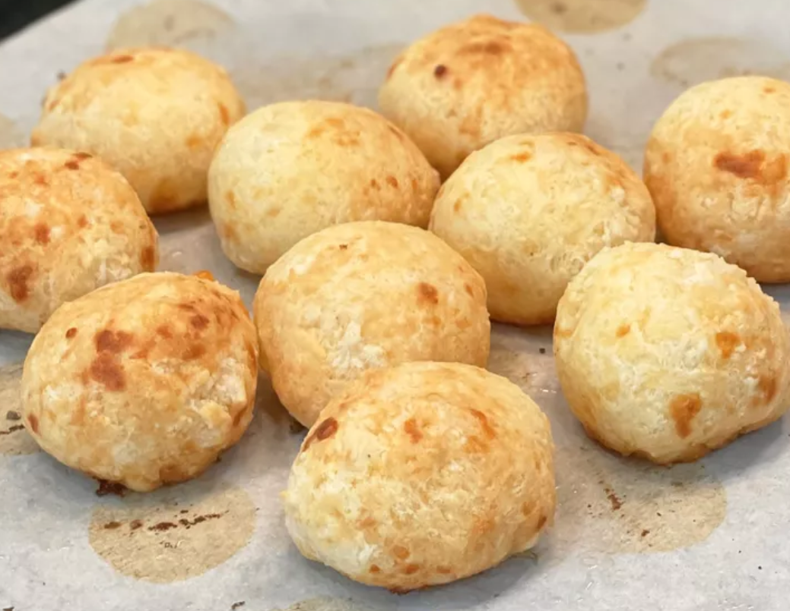

Pao de Queijo

Description
Brazilian bread made from and for the Gods.
Ingredients
- 4 eggs
- 2 egg whites
- 6 slices of mozzarella cheese
- 1 teaspoon of chemical baking powder
- Grated Parmesan
Instructions:
- Beat the eggs, egg whites and cheese in a blender
- add the yeast last
- Distribute the dough into molds
- Add the grated parmesan on top
- Place in the preheated oven at 180°C for 15 minutes. Yield: 6 servings